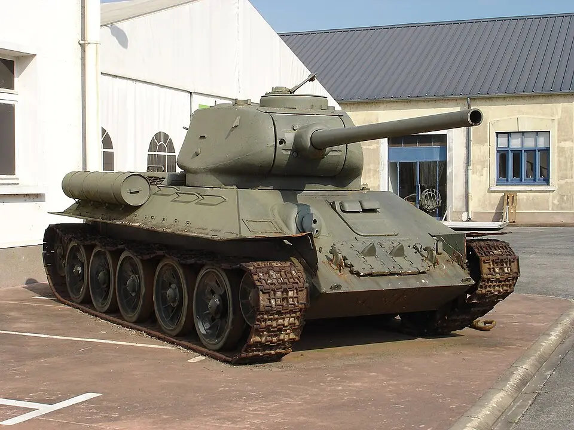

| T-34-85 | |
|---|---|
|
 |
Datos generalesPaís: Unión Soviética Año: 1944 Tripulación: 5 |
EspecificacionesPeso: aproximadamente 32 toneladas Motor: V-2-34, V12 diésel, 500 hp Velocidad máxima: aproximadamente 55 km/h |
|
ArmamentoCañón principal: ZiS-S-53 de 85 mm Ametralladoras: 2 × DT de 7,62 mm Municion empleada
|
|
El T-34-85 fue una evolución del T-34 soviético desarrollada durante la Segunda Guerra Mundial. Su aparición respondió a la necesidad de aumentar la potencia de fuego del T-34 para enfrentarse a los nuevos tanques alemanes que habían aparecido en el Frente Oriental.
La principal modificación fue la incorporación de una nueva torreta capaz de montar el cañón ZiS-S-53 de 85 mm. La torreta también permitió aumentar el espacio disponible para la tripulación y pasó a contar con tres tripulantes, separando las funciones de comandante y artillero.
El T-34-85 mantuvo muchas de las características que habían hecho exitoso al T-34 original, incluyendo su blindaje inclinado, motor diésel y orugas anchas. La combinación de movilidad, protección y potencia de fuego convirtió al T-34-85 en uno de los principales tanques soviéticos de la segunda mitad de la guerra.
La producción del T-34-85 comenzó a principios de 1944 en la Unión Soviética. Las principales fábricas involucradas fueron la Fábrica No. 112 Krasnoye Sormovo, la Fábrica No. 183 en Nizhny Tagil y posteriormente la Fábrica de Omsk.
Durante la Segunda Guerra Mundial se produjeron decenas de miles de T-34-85. Su fabricación continuó después de 1945 en la Unión Soviética y posteriormente en otros países del bloque socialista, donde el diseño fue producido bajo licencia o utilizado como base para nuevas variantes.
El T-34-85 entró en combate durante 1944 en el Frente Oriental. Su aparición proporcionó a las fuerzas soviéticas un tanque medio con una potencia de fuego considerablemente mayor que la del T-34-76. Fue utilizado durante las grandes ofensivas soviéticas de 1944 y 1945.